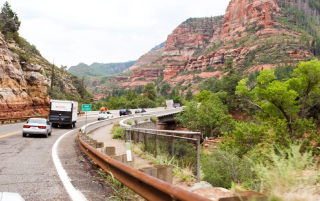

Добро пожаловать в Седону
Фото и видео
Не можете решиться на путешествие из-за курса? Фотографии помогут вам забыть о политике и экономике.
-

Неродные просторы
Автор фото: Борис 1350
1350
-

Местная растительность
Автор фото: Сергей
143
-

Дорога на север
Автор фото: Петр
96
-

Мост дьявола
Автор фото: Антон
254
Все еще сомневаетесь?
Смотрите видеопрезентацию и скорее за билетами, пока они не подорожали в очередной раз!
